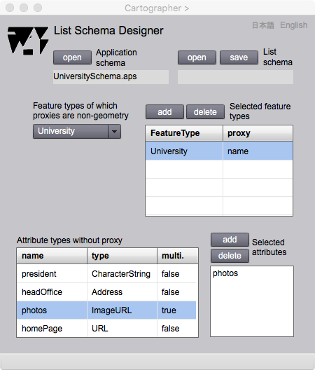

List Schema Designer
Conventional maps are diagrams of symbols distributed on the sheet. Therefore one of the purpose of GISs is to represent such maps. In gittok, two dimensional maps can be represented if proxies of features are geometric attributes. However, as long as feature is an abstruction of real world phenomena, a feature does not always have geometry as its attribute. If a proxy is character string such as a name of a company, a list of company names will be one dimensional map of real world phenomena.
List Schema Designer

Figure 1. Page of List schema designer.
Fields
List schema
List schema name that is opened or saved is displayed in this field.
Application schema
An application schema name for the list schema is displayed in this field.
Feature types (selectable)
Selected attribute name for the list schema s displayed in the field.
Attributes (selectable)
A list of feature attributes for the list schema is listed in this list.
Selected Attributes (selectable)
The list of selected attributes which are used for the representation is displayed.
Buttons
open (List schema)
The list schema can be opened by clicking this button.
save (List schema)
The list schema can be saved by clicking this button.
open (Application schema)
An application schema can be opened by clicking this button.
add
Representable attribute is added by clicking this button after the selection of attribute type listed in Attributes list.
delete
Representable attribute is deleted by clicking this button after the selection of attribute type listed in Selected attributes list.
日本語
今あなたが読んでいるドキュメントが表示されます．
English
You can read the tutorial written in English.